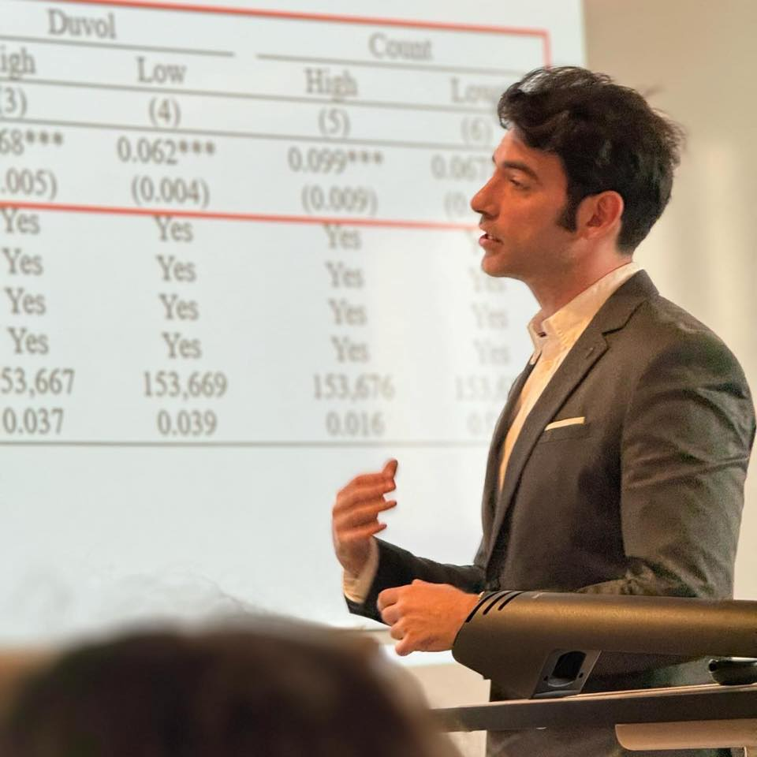

Ad Astra Assistant Professor of Finance · University College Dublin · Visiting Fellow · University of Essex
My research focuses on mergers and acquisitions, financial markets, and sustainable finance — an area of growing interest in my work. I am currently an Ad Astra Assistant Professor of Finance at University College Dublin, Ireland, and a Visiting Fellow at the University of Essex, United Kingdom.
Average teaching evaluation: 4.4 / 5 · Fellow of the Higher Education Academy (D2)
Outside of research, I am an active investor building my own strategies, an avid reader of non-fiction and soft science, and enjoy cooking and going to the gym.
